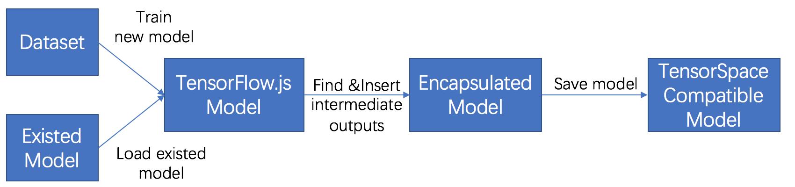
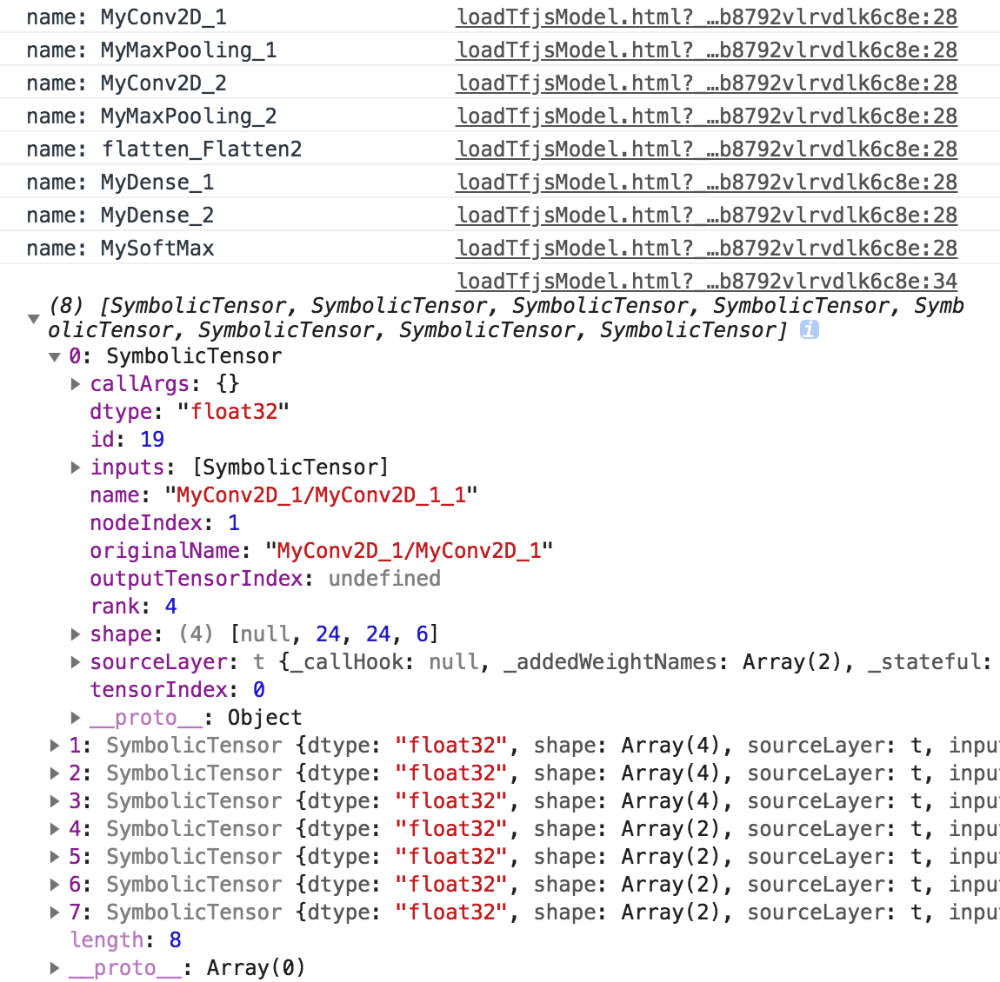

In the following chapter, we will introduce how to preprocess a TensorFlow.js (AKA. "tfjs") model before applying TensorSpace, which requires the intermediate outputs from internal layers.
If you are new for a tfjs model, we highly recommend you to go through the guide from TensorFlow.js first.
The sample files we used in the tutorial are listed below:
filter_center_focus
createTfjsModel.html
filter_center_focus
loadTfjsModel.html
filter_center_focus
all model files
For the tutorial, make sure to install and import TensorFlow.js.
To install TensorFlow.js, just use the NPM install:
npm install @tensorflow/tfjsTo import TensorFlow.js, include tf.min.js in html.
<script src="libs/tf.min.js"></script>For preprocessing a tfjs model, we have a general process like:

Fig. 1 - Steps to preprocess a TensorFlow.js model
In this tutorial, we will introduce the process in two use cases:
filter_center_focus
1. To train a TensorSpace compatible tfjs model
filter_center_focus
2. To convert an existing tfjs model to make it compatible with TensorSpace
All cases use LeNet with MNIST dataset as an example.
1 To train a TensorSpace compatible tfjs model
1.1 Train a new model
If you do not have any existed model in hands, let's train a TensorFlow.js model together.
First, let's take a look at the LeNet structure:

Fig. 2 - LeNet structure
By following the structure, we can build a basic model:
// Initialize layer.
const input = tf.input({shape: [28, 28, 1]});
const conv1 = tf.layers.conv2d({
kernelSize: 5,
filters: 6,
strides: 1,
activation: 'relu',
kernelInitializer: 'VarianceScaling',
name: 'MyConv2D_1'
});
const maxPool1 = tf.layers.maxPooling2d({
poolSize: [2, 2],
strides: [2, 2],
name: 'MyMaxPooling_1'
});
const conv2 = tf.layers.conv2d({
kernelSize: 5,
filters: 16,
strides: 1,
activation: 'relu',
kernelInitializer: 'VarianceScaling',
name: 'MyConv2D_2'
});
const maxPool2 = tf.layers.maxPooling2d({
poolSize: [2, 2],
strides: [2, 2],
name: 'MyMaxPooling_2'
});
const flatten = tf.layers.flatten();
const dense1 = tf.layers.dense({
units: 120,
kernelInitializer: 'VarianceScaling',
activation: 'relu',
name: 'MyDense_1'
});
const dense2 = tf.layers.dense({
units: 84,
kernelInitializer: 'VarianceScaling',
activation: 'relu',
name: 'MyDense_2'
});
const softmaxLayer = tf.layers.dense({
units: 10,
kernelInitializer: 'VarianceScaling',
activation: 'softmax',
name: 'MySoftMax'
});
// Make layer connection.
const conv1Output = conv1.apply(input);
const maxPool1Output = maxPool1.apply(conv1Output);
const conv2Output = conv2.apply(maxPool1Output);
const maxPool2Output = maxPool2.apply(conv2Output);
const flattenOutput = flatten.apply(maxPool2Output);
const dense1Output = dense1.apply(flattenOutput);
const dense2Output = dense2.apply(dense1Output);
const softMaxOutput = softmaxLayer.apply(dense2Output);
// For multiple outputs purpose, we use function tf.model API to build the model.
const model = tf.model({
inputs: input,
outputs: softMaxOutput
});wb_sunnyNote:
- filter_center_focus Because of the limitations of TensorFlow.js library, we have to use the traditional tf.model() and layer.apply() techniques to construct the model. All layer output objects will be used later for the multiple outputs of the encapsulated model.
- filter_center_focus If you build the model by tf.sequential(), you probably want to check 2. To convert an existing tfjs model to make it compatible with TensorSpace.
After creating the model, we can load the data, compile the model and train it: (The training script is modified from tfjs's official tutorial)
const LEARNING_RATE = 0.0001;
const optimizer = tf.train.adam(LEARNING_RATE);
model.compile({
optimizer: optimizer,
loss: 'categoricalCrossentropy',
metrics: ['accuracy'],
});
let data;
async function load() {
data = new MnistData();
await data.load();
}
async function train() {
const BATCH_SIZE = 50;
const TRAIN_BATCHES = 2;
const TEST_BATCH_SIZE = 1000;
const TEST_ITERATION_FREQUENCY = 100;
for (let i = 0; i < TRAIN_BATCHES; i++) {
const batch = data.nextTrainBatch(BATCH_SIZE);
let testBatch;
let validationData;
if (i % TEST_ITERATION_FREQUENCY === 0) {
testBatch = data.nextTestBatch(TEST_BATCH_SIZE);
validationData = [
testBatch.xs.reshape(
[TEST_BATCH_SIZE, 28, 28, 1]
),
testBatch.labels
];
}
const history = await model.fit(
batch.xs.reshape([BATCH_SIZE, 28, 28, 1]),
batch.labels,
{
batchSize: BATCH_SIZE,
validationData,
epochs: 1
});
if (i % TEST_ITERATION_FREQUENCY === 0) {
const loss = history.history.loss[0];
const accuracy = history.history.acc[0];
console.log(accuracy);
}
}
}
await load();
await train();1.2 Collect internal outputs from intermediate layers
Since we construct the model by applying the output from the previous layer, we can encapsulate all or our desired layer outputs into a new model:
const encModel = tf.model({
inputs: input,
outputs: [conv1Output, maxPool1Output, conv2Output,
maxPool2Output, dense1Output, dense2Output, softMaxOutput]
});wb_sunnyNote:
- filter_center_focus model is the model which we train and evaluate following the common ML process.
- filter_center_focus encModel is the model with multiple intermediate outputs and will be saved later.
1.3 Save the encapsulated model
Last, we can save our encapsulated model:
async function saveModel() {
await encModel.save("downloads://YOUR_MODEL_NAME");
}wb_sunnyNote:
- filter_center_focus downloads:// means to download from the browser.
- filter_center_focus
There are two types of files created:
- flare .json is for the model structure
- flare .bin is the trained weights
- filter_center_focus Checkout tf.Model.save for more information.
- filter_center_focus For other save method, please checkout the official guide
After downloading from the browser, we shall have the following files:

Fig. 3 - Saved model files
2 To convert an existing tfjs model to make it compatible with TensorSpace
2.1 Load an existing model
To load an existing tfjs model, just simply load like:
const loadedModel = await tf.loadModel('/PATH_TO_MODEL_JSON/model.json');2.2 Collect internal outputs from intermediate layers
All we want from the model is to collect the internal outputs from intermediate layers. We can collect the output from each desired layer:
// Hard code the input if you are sure about the shape
// const input = tf.input({shape: [28, 28, 1]});
const input = ((typeof loadedModel === 'undefined') ? layers[0].input : loadedModel.input);
let targetLayerNameList = ["MyConv2D_1","MyMaxPooling_1","MyConv2D_2","MyMaxPooling_2","MySoftMax"];
let outputList = [];
let tempInput = input;
let tempOutput = null;
for (i =0; i < layers.length; i++) {
console.log("name: " + layers[i].name);
tempOutput = layers[i].apply(tempInput);
if (targetLayerNameList.indexOf(layers[i].name) >-1) {
outputList.push(tempOutput);
}
tempInput = tempOutput;
}
console.log(outputList);The console output shall be:

Fig. 4 - Intermediate layer names and multiple outputs
wb_sunnyNote:
- filter_center_focus Because of the limitations of TensorFlow.js, we have to apply each layer to its corresponding input manually.
- filter_center_focus In our example, since the model structure is simple: a single workflow from start to the end, we just need to iterate every layer and set the layer output as the input for the next layer. However, if you have a complex structure, please double check the inputs the layer required.
Then, we can encapsulate the desired outputs into a new model with the same input as the original model:
const encModel = tf.model({
inputs: input,
outputs: outputList
});
singleOutput = encModel.predict(tf.randomNormal([1,28,28,1]));
console.log(singleOutput);
Fig. 5 - Multiple outputs from encapsulated model
2.3 Save the encapsulated model
After completing the previous steps, we can save the encapsulated model:
async function saveModel() {
await encModel.save("downloads://encModel");
}
saveModel();
If everything looks good, you shall be ready for the next step
- Load a TensorSpace compatible model